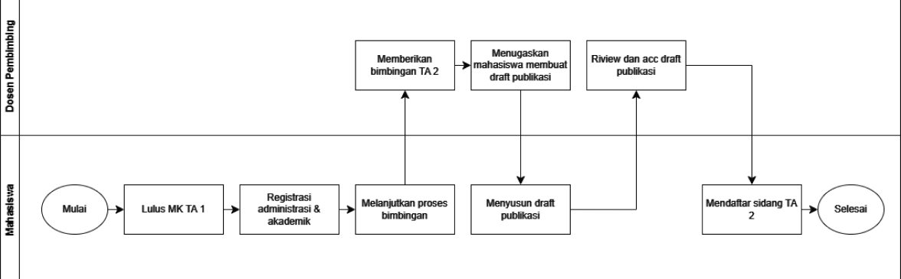

Laporan Tugas Akhir II yang sudah disetujui pembimbing
tanpa jilid (Rangkap 5)
Cetak draft hasil penelitian dalam format paper (format:
Artikel Ilmiah) rangkap 5
Bukti Cek Software Plagiarisme (maksimal 20%)
Fotokopi Bukti Bimbingan (minimal 10 kali dengan Dosen
Pembimbing I dan minimal 5 kali dengan Dosen Pembimbing
II), yang dilanjutkan dari bimbingan saat Tugas Akhir I
Fotokopi Kuitansi Registrasi, Kuitansi Pendaftaran-Wisuda,
Transkrip Sementara, KRS, Ijazah Terakhir (Legalisir), dan
Akte Kelahiran
Surat Pernyataan Karya Asli Tugas Akhir (foto copy dengan
Materai 6000)

Pola Perkuliahan Tugas Akhir 1 dan 2
Pola Perkuliahan Tugas Akhir 1
Minggu 1: Aturan TA 1 dan Penyampaian Research of Interest
Dosen
Minggu 2: Mahasiswa Mengumpulkan topik/tema khusus yang akan
diteliti
Minggu 3: Pengumuman Dosen Pembimbing I dan Pengajuan Dosen
Pembimbing II
Minggu 4-11: Proses bimbingan dengan Pembimbing I dan
Pembimbing II
Minggu 8: Laporan kemajuan proposal mahasiswa
Minggu 12: Pengumpulan proposal serta Pendaftaran sidang
proposal
Minggu 13-14: Pengumuman jadwal sidang proposal (maks. 3 hari
sebelum sidang)
Pola Perkuliahan dan Syarat Tugas Akhir 2
Pembimbing telah menyatakan bahwa Tugas Akhir II mahasiswa
yang bersangkutan telah selesai melalui lembar persetujuan
pada Laporan Tugas Akhir.
Laporan Tugas Akhir II yang sudah disetujui pembimbing
tanpa jilid (Rangkap 5)
Cetak draft hasil penelitian dalam format paper (format:
Artikel Ilmiah) rangkap 5
Bukti Cek Software Plagiarisme (maksimal 20%)
Fotokopi Bukti Bimbingan (minimal 10 kali dengan Dosen
Pembimbing I dan minimal 5 kali dengan Dosen Pembimbing
II), yang dilanjutkan dari bimbingan saat Tugas Akhir I
Fotokopi Kuitansi Registrasi, Kuitansi Pendaftaran-Wisuda,
Transkrip Sementara, KRS, Ijazah Terakhir (Legalisir), dan
Akte Kelahiran
Surat Pernyataan Karya Asli Tugas Akhir (foto copy dengan
Materai 6000)
Dennis Eka Saputra (17103047)
Rancang Bangun Aplikasi Point Of Sale Dengan Metode
Prototyping (Studi Kasus: Kini Cheese Tea Berkoh)
9 September 2022 |
Kategori
Martina Fajariyanti (17103096)
Penyusunan ManajemenRisiko Teknologi Informasi pada Kantor BRT
Trans Jateng Koridor 1 Purwokero Kabupaten Banyumas
Menggunakan Framework ISO 31000:2018